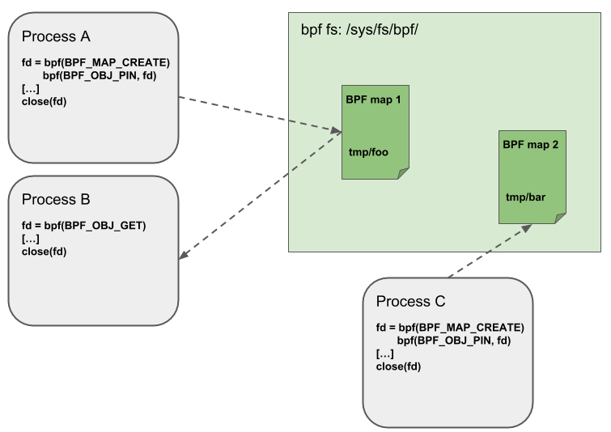
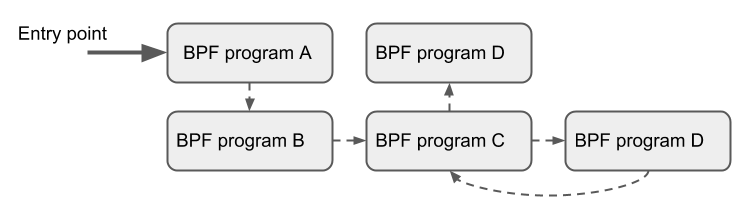

what is ebpf
BPF(Berkeley Packet Filter) 是Linux内核中一个高度灵活且高效的类虚拟机基础设施，允许以安全的方式在丰富的内核钩子中执行字节代码。BPF在内核的许多子系统中使用，特别是网络、追踪与安全子系统中
eBPF(extended Berkeley Packet Filter) 是Linux的现行标准，传统BPF程序(cBPF)会被透明的翻译为eBPF并在内核中执行
BPF起初是为了进行网络包过滤，目前其功能已有更多扩展，不局限于网络 1
BPF 架构
BPF组成
- 指令集
- 基于指令集更进一步的基础设置
- maps: 高效的键值存储
- helper functions: 与内核交互并使用内核的功能
- tail calls：用于调用其他BPF程序的尾调用
- security hardening primitives：安全强化原语
- pseudo file system：用于固定对象(maps, programs) 的伪文件系统
- 允许卸载 BPF 程序的基础设施: 如将BPF程序卸载到智能网卡上
利用 BPF 的内核子系统也是 BPF 基础设施的一部分
- XDP BPF 程序挂载点是在网络驱动处理的最早阶段，并在接收到网络分组时出发BPF程序的执行，根据这一定义，这能够实现可能的最佳数据包处理性能，因为数据包无法在软件中更早的时间点进行处理，然而，由于这种处理在发生在网络栈处理的最早阶段，此时网络栈尚未从网络包包中提取元数据
- tc BPF 运行在内核栈的稍后阶段，因此可以访问更多的元数据和内核功能
BPF 指令集
BPF是一个通用RISC指令集，最初设计的目的是在C的子集中编写程序，可以通过编译器后端编译成BPF指令，内核可以稍后通过内核内JIT编译器将它们映射到本机操作码中，以实现内核内的最佳执行性能
在内核中加入BPF指令集的优势:
- 无需越过内核/用户空间来使内核可编程化，相比于将数据从内核移动到用户空间再进行处理，可以将处理程序编译为BPF并载入到内核中，避免地址空间的切换，同时仍然能在需要的时候通过 maps 在内核与应用地址空间中共享状态
- 考虑到可编程数据路径的灵活性，还可以通过编译程序解决的用例所不需要的特性来对程序进行性能优化。例如如果一个容器不需要IPv4，那么可以构建BPF程序以仅处理IPv6, 以节省 fast-path 中的资源
- 在网络子系统中（例如tc和XDP），BPF程序可以自动更新，而无需重新启动内核、系统服务或容器，也无需中断通信，此外，还可以通过BPF映射在整个更新过程中维护任何程序状态
- BPF为用户空间提供了稳定的ABI，不需要任何第三方内核模块。BPF是Linux内核的核心部分，它可以保证现有的BPF程序与更新的内核版本一起运行
- BPF程序与内核协同工作，它利用现有的内核基础设施（例如驱动程序、网络设备、隧道、协议栈、套接字）和工具（例如iproute2）以及内核提供的安全保障。与内核模块不同，BPF程序通过内核内验证器进行验证，以确保它们不会导致内核崩溃或始终终止。BPF可以被认为是一种通用的“粘合代码”，用于编写程序以解决特定的用例
内核内BPF程序的执行总是由事件驱动的
BPF资源
- 11 个带 32 bit 子寄存器的 64 bit 寄存器
- pc
- 512 byte BPF 栈空间
寄存器
命名为 $r_{0} - r_{10}$, 默认在 64 bit下工作，32位子寄存器只能通过特殊的ALU操作访问，32位低位子寄存器在写入时被 零扩展至 64 bit
$r_{10}$ 是唯一一个只读的寄存器，用来存放栈指针地址，以便访问 BPF 的栈空间，剩下的 $r_{0} - r_{9}$ 是通用寄存器，可读可写
调用规则
BPF 程序可以调用内核预定义的 helper function，调用规则如下
- $r_{0}$ 存放 helper function 请求的返回值
- $r_{1} - r_5{}$ 存放调用 helper function 的参数
- $r_{6} - r_{9}$ 是被调者保存寄存器，在hepler function中被保存与恢复
BPF 调用约定足够通用，因此可以直接映射到 x86_64, arm64和其他ABI, 因此所有BPF寄存器都会一对一映射到 HardWare CPU 寄存器，JIT只需要发出调用指令，而无需进行函数参数的移动
此调用约定被建模以涵盖常见的调用情况，而不会造成性能损失，当前不支持具有6个或更多参数的调用，内核中专用于BPF的helper函数（BPF_CALL_0（）到BPF_CALL_5（）函数）是专门按照这种约定设计的
$r_{0}$ 同时也保存BPF程序 exit value ，exit value 的语义由程序类型定义。此外，当将执行交还给内核时，exit value 将作为32位值传递
$r_{1} - r_{5}$ 是临时寄存器，意味着如果要在多个助手函数调用中重用这些参数，BPF程序需要将它们存放到BPF堆栈中，或者将它们移动到被调用方保存的寄存器。spilling/filling 分别对应将零时寄存器中的数据存放到栈上/从栈上取出数据到零时寄存器
在进入BPF程序的执行时，寄存器 $r_{1}$ 初始时包含程序的 context。context 是BPF程序的输入参数。BPF程序被严格控制在 single context 中工作。Context由 BPF 程序的类型决定。例如，网络程序可以将网络包（skb）的内核表示作为输入参数
每个BPF程序指令数量被限制在 4096，这意味着任何BPF程序都会很快的结束。在高于5.1版本的内核中，指令数量限制扩展至 1,000,000。
尽管指令集包含向前和向后跳转的指令，但是内核中的BPF验证器会禁止在BPF程序中出现循环，以便保证BPF程序总是会终止。同时，对应BPF程序直接的尾调用，上限是33个嵌套的尾调用，这通常用于分离部分程序逻辑，如将将程序分为多个阶段(将一个程序拆成多个程序，使用尾调用连接起来)
指令格式为两操作数模型，这有助于在JIT阶段将BPF指令映射到本机指令。指令长度固定，即任何指令都是 64 bit。目前，已经实现了87条指令，并且编码时允许在需要时使用进一步的指令扩展集合
指令编码
在大端机器上一个 64 bit 指令的指令编码被定义为一个 比特序列，从最高有效位(MSB)到最低有效位(LSB)
- (op:8, dst_reg:4, src_reg:4, off:16, imm:32)
- off 与 imm 为带符号类型
op 定义要执行的实际操作。op的大部分编码是从cBPF中重用的
操作可以基于寄存器或立即数操作数，而op本身的编码提供了使用哪种模式的信息( BPF_X 表示基于寄存器的操作， BPF_K 表示基于立即数的操作), 在后一种情况下，目标操作数始终是寄存器。dst_reg 和 src_reg 都提供操作码要使用的寄存器操作数的信息。
off 在某些指令中用于提供相对偏移，如对于栈上数据或其他BPF中可用的缓冲数据(map values, packet data, etc)的寻址, 或者是在跳转指令中寻址跳转地址。imm 保存一个 常量/立即值
op 可分为各种指令类，这些类别也被编码到 op 字段中，op 从最高有效位(MSB)到最低有效位(LSB)被分为
- (code:4, source:1, class:3)
class 是更通用的指令类，code 表示该类中的特定操作代码, source 表示源操作数是寄存器还是立即数
指令类别
BPF_LD， BPF_LDX
两类指令都是用来加载，BPF_LD 用来加载 double word
BPF_ST, BPF_STX
两类指令用来存储
BPF_ALU, BPF_ALU64
两类都包含ALU操作，两者都支持add（+）、sub（-）和（&）、or（|）、left shift（<<）、right shift（>>）、xor（^）、mul（*）、div（/）、mod（%）、neg（~）操作
BPF_JMP
这类指令用来跳转
所有BPF处理（如将程序加载到内核或创建BPF映射）都通过 BPF（）系统调用进行管理，它还用于管理映射条目（查找/更新/删除），并通过 pinning 使程序和映射持久化在BPF文件系统中
Helper Functions
Helper函数是一个概念，它使BPF程序能够查询内核定义的一组函数调用，以便从内核检索/向内核推送数据。每个BPF程序类型的可用帮助函数可能不同，如与连接到tc层的BPF程序相比，连接到套接字的BPF程序只能调用helpers的子集
每个 helper function 都使用与系统调用类似的公共共享函数签名来实现
u64 fn(u64 r1, u64 r2, u64 r3, u64 r4, u64 r5)
内核将 helper function 抽象为宏 BPF_CALL_0()到 BPF_CALL_5()，这些宏与系统调用类似
所有BPF helper function 都是core内核的一部分，不能通过内核模块进行扩展或添加
Maps

maps 是驻留在内核空间中的高效键/值存储, 可以从BPF程序访问它们，以便在多个BPF程序调用之间保持状态。也可以从用户空间通过文件描述符访问，并且可以与其他BPF程序或用户空间应用程序任意共享
共享 maps 的BPF程序不必是相同的类型，如tracing程序可以与networking程序共享同一个 map, 单个BPF程序目前可以访问的map上限是64个
map的实现由 core kernel 提供。具有 per-CPU 和 non-per-CPU 风格的通用映射可以读取/写入任意数据，但也有一些非通用map与help functions一起使用
通用maps有:
BPF_MAP_TYPE_HASH,BPF_MAP_TYPE_ARRAYBPF_MAP_TYPE_PERCPU_HASH,BPF_MAP_TYPE_PERCPU_ARRAYBPF_MAP_TYPE_LRU_HASH,BPF_MAP_TYPE_LRU_PERCPU_HASHBPF_MAP_TYPE_LPM_TRIE
per-cpu变量是linux系统一个非常有趣的特性，它为系统中的每个处理器都分配了该变量的副本
非通用maps在当前的kernel中有: BPF_MAP_TYPE_PROG_ARRAY,BPF_MAP_TYPE_PERF_EVENT_ARRAY, BPF_MAP_TYPE_CGROUP_ARRAY,BPF_MAP_TYPE_STACK_TRACE, BPF_MAP_TYPE_ARRAY_OF_MAPS,BPF_MAP_TYPE_HASH_OF_MAPS
BPF_MAP_TYPE_PROG_ARRAY: 是一个数组map, 用来保存其他BPF程序
BPF_MAP_TYPE_ARRAY_OF_MAPS 和 BPF_MAP_TYPE_HASH_OF_MAPS 都保存了指向其他map的指针，以便在运行时可以原子替换整个BPF映射
Object Pinning

BPF maps 和 程序 表现为内核的一种资源，并且只能通过内核中匿名inode所支持的文件描述符进行访问
用户空间应用程序可以使用大多数与文件描述符相关的API，但同时，文件描述符仅限于进程的生命周期，这使得像map共享很难进行
为了克服这一限制，目前已经实现了一个最小的内核空间BPF文件系统，BPF映射和程序可以通过 Object pining 的过程 pinning 到该文件系统。因此，BPF系统调用扩展了两个新命令，它们可以pin (BPF_OBJ_pin) 或 retrieve (BPF_OBJ_GET) 先前 pinned 的对象
用这种方式可以将 ebpf 的状态进行持久化
Tail Calls

尾部调用可以被视为一种机制，允许一个BPF程序调用另一个，而不返回到旧程序。这样的调用开销最小，因为与函数调用不同，它被实现为一个长跳转，重用相同的堆栈框架
只有相同类型的程序才能被尾部调用，而且它们还需要在JIT编译方面匹配，因此可以调用JIT编译的程序或仅调用解释的程序，但不能混合在一起
todo
BPF to BPF Calls
todo
JIT
Lifetime
prog也是BPF objects, 这使得在应用之间分享ebpf程序成为可能
在用户空间中可以通过文件描述符(FDs)来访问BPF objects(progs, maps, and debug info)，每一个对象都有一个引用计数，当引用计数归零时，将会触发RCU后的内存释放2
对于BPF prog中的BPF map而言，由于BPF prog的存在，BPF map至少会有一个引用计数，因此直到BPF prog也被释放，BPF map才会被释放
当BPF prog被attach到一些hook上时，BPF prog的引用计数就会增加，比如从用户态加载BPF prog并attach时，即便没有对应的文件被创建，但是引用计数并不为0,因此还能够继续存在
landscape
bpf_tutorial郑昱笙老姐的教程，主要讲的是libbpf的使用方法，非常不错
bolipi国内活跃的ebpf社区，提供一些入门教程，关键是还有一些企业项目的路标，适合有一定学习基础后上手项目
ebpf_slide中包含有大量ebpf相关的slide, 且有分类，初学者可以参考eBPF基础知识板块进行学习
kern_ebpf_doc是内核中的ebpf介绍, 包括help functions，prog type, map type 等介绍，可以协助进行ebpf的开发
ebpf_top中收集了大量ebpf相关的博文翻译，其中大部分博文都来自于facebook
mozilazg_blog大佬的博客中，有许多关于ebpf及gobpf的相关文章
bcc
bcc是当前最流行的ebpf开发框架，全称是bpf compiler collection, 提供高度封装的api来辅助ebpf程序的开发，并在运行时编译，由于封装了大量 ebpf程序开发，编译，加载的内容，极大降低了ebpf程序的开发流程，但是相应的灵活性也有所降低，同时由于需要在运行时进行编译，不可避免的目标机器上的编译器环境支持
bcc-tools中介绍了使用bcc实现的一套工具，用于对linux进行性能分析，同时对应的源码也是学习bcc开发模式的很好教程
bcc-libbpf-tools是基于libbpf实现的一套bcc工具，相比于libbpf官方仓库，提供了更丰富的example, 学习libbpf时可以参考此仓库中的内容
libbpf
libbpf_bootstrap是基于libbpf的ebpf开发框架，主要理念是CO-RE，相比于bcc, 无需在目标机器上安装编译器，但考虑版本之间内核的区别，往往只能CO-RO, 依赖较新版本的内核特性
框架核心在于提供ebpf kern和user程序之间沟通的接口，如装载ebpf程序，设置ebpf程序中的变量，获取ebpf kern程序的输出，编译ebpf程序并编码到user程序中等
开发者需要完成 ebpf kern 程序和 user 程序中的主要逻辑的开发，其中 ebpf kern 程序的开发需要遵守对应版本内核的规范，可以参考内核代码中的 tools/testing/selftests/bpf, samples/bpf中的代码， 以及bcc代码仓库中的libpf-tools
开发ebpf kern程序要求对kernel有一定了解， 而开发 ebpf user 程序需要了解 libbpf 中的接口，主要包括如何加载ebpf代码，如何获取ebpf kern代码中的maps，如何从event map中读取数据进行处理等
libbpf-rs提供了rust风格的libbpf接口，从而能够使用rust进行ebpf user程序的开发，开发流程与c一致。libpf-example中提供了rust/c的示例程序，libbpf-rs-example中还有额外的rust示例程序, 我也写了一些libbpf-rs的入门程ebabypf
aya
aya与libbpf-rs类似，都以CO-RE为目标，但提供原生rust的ebpf kern程序开发，并通过LLVM编译为ebpf程序。aya实质是一种rust原教旨主义的开发框架，考虑到当前rust在kernel仍然处于起步阶段，因此实际开发并不方便，表现为极少example(aya提供), prog类型支持不完全等, 只能说前景非常巨大
write ebpf
EBpf是一种在Linux内核中运行的程序。如果您想学习ebpf，您可以从以下几个方面入手：
1.阅读Linux内核文档，了解ebpf的工作原理和用法。
2.学习ebpf的语法和语义，包括如何编写ebpf程序、如何使用ebpf系统调用以及如何使用ebpf工具链来编译和验证ebpf程序。
3.练习使用ebpf，尝试编写一些简单的ebpf程序，并在Linux系统上运行它们。
4.学习如何使用ebpf来实现一些常见的功能，例如网络流量监控、系统性能分析等。
5.了解ebpf的最新发展和应用，并尝试应用它来解决实际问题。
您可以在线搜索相关的教学视频或文章，也可以参考以下几个资源：
1.Linux内核文档：https://www.kernel.org/doc/html/latest/bpf/index.html
2.ebpf教程：https://cilium.io/docs/ebpf/
3.ebpf实践指南：https://www.oreilly.com/library/view/ebpf-practitioners-guide/9781492044295/
4.ebpf入门教程：https://www.cncf.io/blog/2018/04/17/an-introduction-to-ebpf/
5.ebpf专题讲座：https://www.youtube.com/watch?v=B8LfVpUbCmE
6.ebpf项目实战：https://github.com/iovisor/bcc/blob/master/docs/tutorial_bcc_python_developer.md
bpf-cilium bpf doc bpf blog ebpf deep ebpf tracepoint
c libbpf_c
go ebpf_go
kern program
libbpf
开发 ebpf C 程序所需要的包，包括 helper 函数，相关宏定义等
# arch
sudo pacman -S libbpf
# ubuntu
sudo apt-get install libbpf-dev
vmlinux.h
vmlinux.h 中包含了linux kernel 内部定义的结构体及变量，如果需要对内核数据进行读取/写入，使用该头文件非常方便
bpftool btf dump file /sys/kernel/btf/vmlinux format c > vmlinux.h
kern data type
u64 和 __u64 都表示相同类型的数据，后者中增加的 __ 表明是内核专用数据类型
try with bpftools
Programming
一个ebpf项目大体可分为三部分
- 内核态程序: 使用C/C++/Rust等语言编写，符合ebpf规范的源代码，将被交叉编译为bpf程序
- 接口层: 提供与内核态bpf程序交互的方法，如读写map
- 用户态程序: 负责在用户态对bpf的输出进一步进行处理，也能够加载/卸载bpf程序，支持多种语言
只有LLVM支持的语言才可以被直接编译为bpf程序，如C/C++/Rust
简单而言，需要首先选择用户态的开发语言，然后找到相应的bpf开发框架(能够生成接口层与内核态程序骨架), 再进行开发
内核态程序
一个简易的ebpf程序，包含两个主要部分
- license: 字符数组，使用
SEC("license")属性标记，值为Dual BSD/GPL, 允许ebpf程序在运行时进行检验 - attach function: 函数，使用
SEC("tp/syscalls/sys_enter_write")属性标记， 其中tp/syscalls/sys_enter_write指定了函数将要挂载的位置，函数名称会作为ebpf程序的名称，而每当系统调用write()触发时，就会触发函数的执行
// minimal.bpf.o
#include <linux/bpf.h>
#include <bpf/bpf_helpers.h>
char LICENSE[] SEC("license") = "Dual BSD/GPL";
int my_pid = 0;
SEC("tp/syscalls/sys_enter_write")
int handle_tp(void *ctx)
{
// 通过helper函数获得pid
int pid = bpf_get_current_pid_tgid() >> 32;
if (pid != my_pid)
return 0;
bpf_printk("BPF triggered from PID %d.\n", pid);
return 0;
}
编译
clang -O2 -target bpf -c minimal.bpf.c -o minimal.bpf.o
bpftool
将bpf程序加载到内核, bpftool prog help 查看完整命令
- bpf prog: 编译好的ebpf程序
- path: 用来挂载bpffs, 并将bpf prog保存到bpffs中，以下命令会将bpffs挂载到
$PWD, 然后将bpf prog保存到tp_demo，一般会将bpf prog挂载到sys/fs/bpf中 - type: bpf 程序的类型
# 加载bpf prog
sudo bpftool prog load minimal.bpf.o $PWD/tp_demo type tracepoint
# 查看bpf progs
sudo bpftool prog list
从内核卸载bpf程序，按照 bpf object 的lifetime, 只需要将 tp_demo 文件删除，就会从内核中卸载bpf程序
bpf
Prog Types
Auto Attach
Prog Types 1 决定了 bpf 程序在内核中的 hook point，可以在 bpf 程序的 SEC() 中定义类型以及额外信息，若额外信息被定义，则libbpf 会获取此信息，来自动决定 bpf 程序的挂载位置，用户也能够在 open 之后进行手动更改，或者是 attach 时进行手动指定
如下 kprobe 为bpf程序的类型，而 __x64_sys_clone 则是提供的额外信息，因而能够自动
// kernel
SEC("kprobe/__x64_sys_clone")
int BPF_KPROBE(sys_clone){}
// user
// auto attach
skel.attach()?
// manual attach
let mut progs = skel.progs_mut();
let sys_clone = progs.sys_clone();
// 注意保存 link 以便后续释放资源，否则 bpf 程序会在 attach 之后就立即被drop
let link = sys_clone.attach_kprobe(false, "__x64_sys_clone")?;
link.detach()?;
Maps
Bpf Maps 提供了用户与内核之间通用格式的数据分享存储，同时 bpf 程序之间也能够通过 maps 共享数据。用户空间中对 maps 的访问依赖 bpf 相关的 syscall
Perf Event && Ring Buffer
Perf Event 与 Ring Buffer 虽同属 BPF_MAP，但实质上并不具备 Map 的功能，其均类似队列，对外输出信息，不同于其他Map，依赖用户程序的轮询来取出数据，Perf Event 与 Ring Buffer 均支持 poll，即当队列中没有数据时，会阻塞当前进程以释放cpu资源, 而当有数据写入时再唤醒进程执行
Ring Buffer 与 Perf Event 在实现上的不同在于
- Perf Event是 Per CPU的， 而 Ring Buffer 能够在不同CPU之间能够共享， 从而更高效地利用内存资源
- 即使在多核场景中，Ring Buffer 也能够提供时序性保证
ring_buf ring_buf_and_perf_event
Hash
对应于 Hash Map，允许使用结构体作为 key， kernel负责 k/v pair 内存空间的创建，回收，默认情况下，Hash Map 会使用一个预先申请的 hash table，使用 BPF_F_NO_PREALLOC 可以关闭
Array
对应于数组，map array 使用 u32 作为下标，通过创建时 max_entries 的设置来决定 array 的大小，array中的所有元素都会提前创建并进行0初始化
Pinning
获取 ebpf 程序 或者 map 的文件描述符后，可以通过 BPF_OBJ_PIN 将其持久化到文件系统中， 路径由用户指定，默认情况使用 LIBPF_PIN_BY_NAME 保存到 /sys/fs/bpf 中的同名文件，此文件保留了对 ebpf 程序的引用，因而ebpf程序不会被释放掉(即使close bpf_fd), 使用 unlink 或将 pin文件删除，则会清除pin的引用
pin 住的 ebpf 程序可以通过 BPF_OBJ_GET 系统调用打开，并获取其 bpf_fd
在libbpf中，对于一个声明了 LIBPF_PIN_BY_NAME 属性的 map， loads时不会对其进行创建，而是从文件系统中获取其描述符，随后可以基于对obj的封装与此描述符进行操作
而在ebpf程序中，同样可以访问 LIBPF_PIN_BY_NAME 属性的 map， 从而在 ebpf 程序之间共享数据，因为此时的ebpf程序中指向了相同的map
Syscall
helpers
helper函数1形式类似于系统调用，是内核暴漏给bpf程序的特殊函数，考虑到bpf程序运行在内核态，因而不会有上下文切换的开销，实际与kernel module中调用kernel函数类似，但由于调用局限在给定的范围内，因而能够在提供灵活性的同时，保证ebpf程序执行的安全性
bpf_get_current_cgroup_id
获取当前task所属cgroup的cgroup_id
- cgroup_id 出现在 cgroup v2 中，实际为cgroup对应 kfs node 的id
bpf_get_current_pid_tgid
获取当前cpu上执行任务的 pid, tgid
/*
* bpf_get_current_pid_tgid
*
* Get the current pid and tgid.
*
* Returns
* A 64-bit integer containing the current tgid and pid, and
* created as such:
* *current_task*\ **->tgid << 32 \|**
* *current_task*\ **->pid**.
*/
static __u64 (*bpf_get_current_pid_tgid)(void) = (void *) 14;
在 Linux 系统中，进程 ID（PID）和线程组 ID（TGID）是两个不同的概念
- 进程 ID（PID）：每个正在运行的进程都有一个唯一的 ID。虽然在某些情况下 PID 可以重复使用（例如，当一个进程终止时，其 PID 可能会立即被新进程重用），但通常情况下每个进程都具有唯一的 PID。PID 用于在系统内部标识、管理和跟踪进程。
- 线程组 ID（TGID）：线程组 ID 是所有线程的唯一标识符。与进程不同，Linux 系统将线程视为进程和线程组之间的一种关系，因此 TGID 表示当前线程所属的进程或线程组的 ID。也就是说，在单线程程序中，PID 和 TGID 是相同的。但在多线程程序中，每个线程都有自己的 ID，但它们共享相同的 TGID
总结来说：
- 每个进程都有一个唯一的 PID。
- 所有线程共享相同的 TGID。
- 在单线程程序中，PID 和 TGID 相同。
- 在多线程程序中，每个线程都有自己的 PID，但它们共享相同的 TGID
通常意义上的 pid 为 tgid
__u64 pid_tgid = bpf_get_current_pid_tgid();
__u32 tgid = pid_tgid >> 32;
__u32 pid = pid_tgid;
bpf_get_current_uid_gid
获取当前用户的 uid 和 gid
/*
* bpf_get_current_uid_gid
*
* Get the current uid and gid.
*
* Returns
* A 64-bit integer containing the current GID and UID, and
* created as such: *current_gid* **<< 32 \|** *current_uid*.
*/
static __u64 (*bpf_get_current_uid_gid)(void) = (void *) 15;
KFuncs
与 bpf helper 类似，但 kfuncs 不提供接口的稳定性，即意味着会跟随着 kernel 版本变化而变化，开发者可以使用已有的 kfuncs 如 core kfuncs， 也可以根据需要自定义 kfuncs 来暴露给 bpf 程序使用
core read
user program
Libpf-rs
feature
- rust-style libbpf
components
kern ebpf code(C) interface(automatical genaration) usr code(rust)
- write ebpf code by C
- add build scrpit to project
- libbpf-cargo automatically generates interface code
- compiling ebpf program
- loading or attaching bytecode
- method to access bytecode segement
- wrting usr code by both rust and interfaces
the ebpf byte code will be compiled together with rust
Aya
feature
- completely rust
components
- kern ebpf code(rust)
- interface(template)
- usr code(rust)
bcc
python
go
libbpf
libbpf 封装了一系列 bpf 相关的 syscall，并生成相应的操作 bpf progs，maps 的接口以便在用户空间内对bpf程序进行操作
c
rust
# libbpf crate
cargo add libbpf-rs
# libbpf build tool
cargo add --build libbpf-cargo
# commandline crate
cargo add clap --features derive
# syscall crate
cargo add nix
build.rs
use std::{env, path::PathBuf}; use libbpf_cargo::SkeletonBuilder; const SRC: &str = "src/bpf/netstat.bpf.c"; fn main() { let mut out = PathBuf::from(env::var_os("OUT_DIR").expect("OUT_DIR must be set in build script")); out.push("netstat.skel.rs"); SkeletonBuilder::new() .source(SRC) .build_and_generate(&out) .unwrap(); println!("cargo:rerun-if-changed={SRC}") }
aya
Cilium Ebpf
cilium 提供了一套工具，生成用户态操作 ebpf kern 程序的骨架代码
project
ebpf_exporter
ebpf_exporter 能够很方便地将 ebpf 程序接入到 prometheus 生态中，并基于容器进行部署。但是这种接入是有限制地，并非任意ebpf程序都可以被转化为 prometheus 指标进行暴露。实质上 ebpf exporter 作用在于将内核空间中的 metric 转化为用户空间中的 prometheus metric, 即 ebpf 程序中应当采用 HASH 类型的map, 其中 map-key 是label value, 而 map-value 则是 value, 并实现类似于 prometheus hist\guage\counter 的功能
Arch
ebpf_exporter总体上由三部分构成
- exporter: 运行在用户态，负责主要的运行逻辑，如ebpf装载、ebpf数据读取、指标转化，指标服务等
- ebpf: 运行在内核态，附加在给定的装载点上，收集内核数据
- config: 配置描述了如何从内核中提取metrics。每个配置都有一个相应的eBPF代码，该代码在内核中运行以生成这些metric
Config
config 中需要做的就是将 map-value 转化为对应的 metric value, 将 map-key 转换为对应的 metric label。其中， value通常类型单一，key则会比较复杂, 因此在key的解析中，引入了 decoder 来进行处理
Metrics
在这部分字段中需要指定ebpf中的map, 并设置其转化到用户空间中的prometheus metric的配置
Labels
此字段中需要定义 label name, 并设置 ebpf map-key 转化为 label value 的方法
key2lables
Lables能够将内核 map keys 转化为prometheus lable
通常来自kernel的map value 大小通常为u64, 而key的可能是u64, 也可能是一个复杂的struct
label可以通过在配置文件中指定 decoder 的方式来进行转换
对于 struct 类型的 map keys 按照以下规则进行对齐(对应类型的起始地址必须是boundary的倍数)
- u64 must be aligned at 8 byte boundary
- u32 must be aligned at 4 byte boundary
- u16 must be aligned at 2 byte boundary
Decoders
Decoders读入指定大小的byte slice并将其转化为字符串
cgroup
将 bpf_get_current_cgroup_id 输出的 u64 类型转换为可读的cgroup path
/sys/fs/cgroup/system.slice/ssh.service
dname
dname 解码器能够将 string 解码为 dns 名称，如下对于label qname, 会将 key 首先转换为 string， 然后再衔接 dname 将 string 转化为 dns 名称
- name: qname
decoders:
- name: string
- name: dname
inet_ip
将ipv4(u32)地址或ipv6(u128)地址转化为字符串
ksym
将内核地函数址转化为函数名称
majorminor
设备可以通过
mknod命令创建
将32位的 major and minor 设备号转化为与 /dev 中类似的设备名称
- 主设备号通常由设备的开发者指定，并且大多数情况下是静态的。主设备号的范围是0-255之间，其中0表示传统的字符设备，1表示内存设备，其他数字都可以用来表示其他类型的设备
- 次设备号则是由设备驱动程序或设备节点的创建者指定的。它用于区分同一种类的设备中的不同实例。例如，在同一台计算机上有多个磁盘驱动器，每个驱动器都属于磁盘设备类别，但它们具有不同的次设备号以便区分
regexp
允许用户传入正则表达式的列表，其中任何一个匹配， 则就会返回
static_map
静态映射, 按照设置好的映射关系进行映射，如设置 allow_unknown， 则不在映射关系中的 key 会转化为 key:key, 否则则转化为 unknown:key
- name: operation
decoders:
- name:static_map
allow_unknown: true
static_map:
1: read
2: write
string
uint